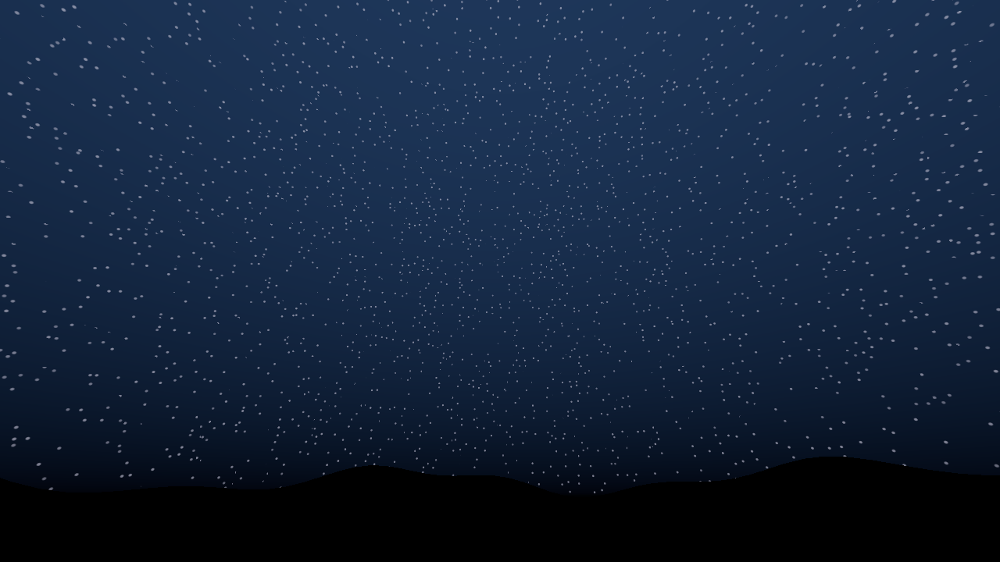
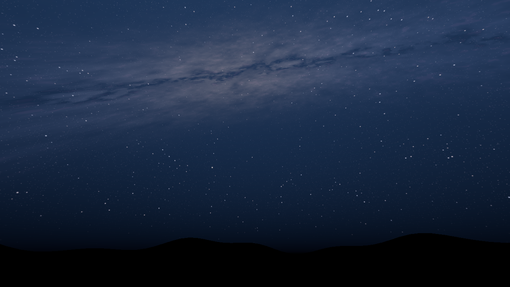
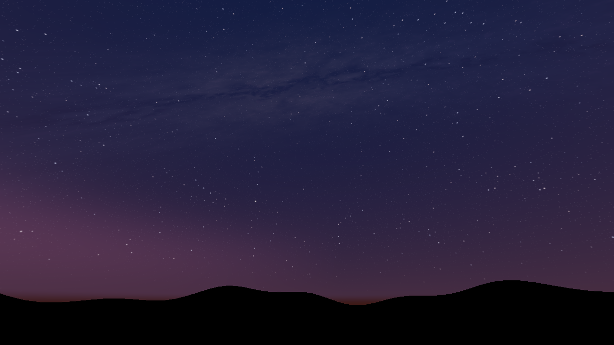
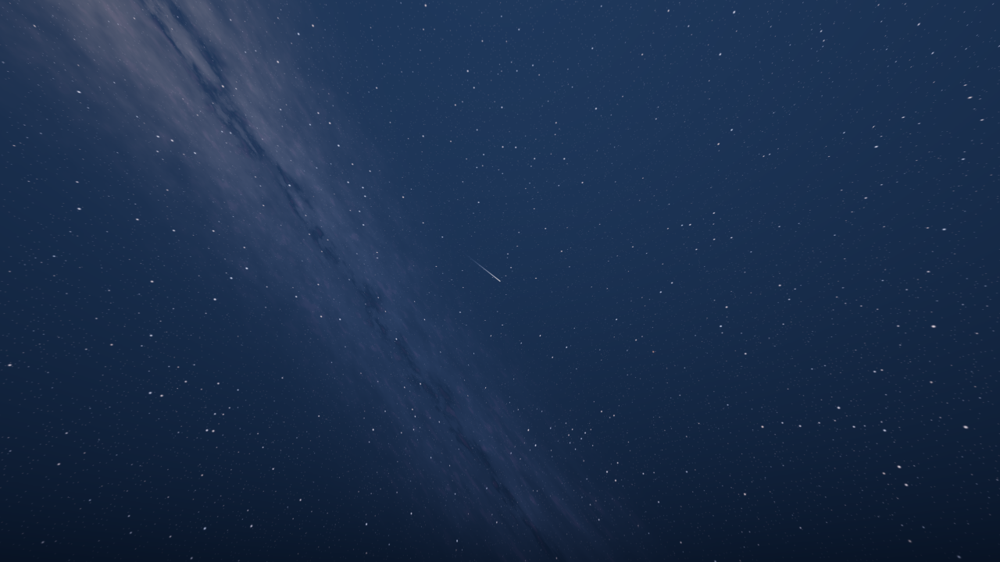
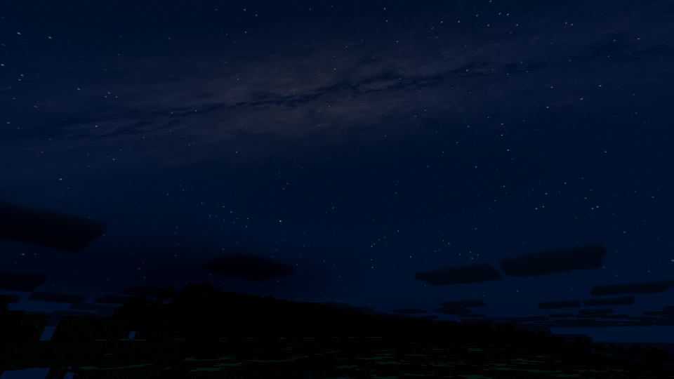

Latest study: relief following the cloud artwork
Follow-up: blockier galactic band and star groupings
A galactic band, dust lanes, varied starlight and occasional meteors. These are offline renders of the production shader over a stand-in silhouette.


Full night image | Previous sky



The server disconnected during this check. This image uses its retained sky state and terrain with a client-only midnight override.